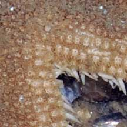
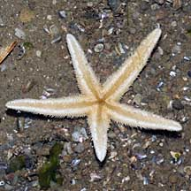
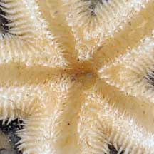

|
|
| sea stars text index | photo index |
| Phylum Echinodermata > Class Stelleroida > Subclass Asteroidea > Genus Luidia |
| Five-armed Luidia
sea star Luidia hardwicki Family Luidiidae updated Jul 2020 Where seen? This elegant sea star is sometimes seen, so far, only on Changi. On soft silty shores near seagrasses. It appears to be seasonal with several being seen and none seen again for some time. According to Lane, recorded from Sultan Shoal and the Pulau Ayer Chawan islands that have since been reclaimed to form Jurong Island. According to Marsh and Fromont, it is found in sand, mud and shelly sand in Australia. Features: Diameter with arms to 5-8cm. 5 arms, long, slightly rounded, and tapered to a pointed tip, edged with tiny spines along the sides. Upperside plain, beige, grey or pinkish, sometimes with darker arm tips or darker band along the arms. Upperside covered with special flat-topped, pillar-like structures called paxillae. Underside pale without markings. Tube feet large, translucent with pointed tips, It has bivalve pedicellariae which require a strong hand lens to see. What does it eat? According to Marsh and Fromont, it eats predominantly clams and snails. But it also eats other echinoderms, crustaceans and foraminifera. It also scavenges on dead animals and may also be cannibals. Prey are swallowed whole. |
 Changi, Aug 08 |
 |
|
 Underside. |
 |
 Pointed tube feet. |
| Five-armed Luidia sea stars on Singapore shores |
On wildsingapore
flickr
|
| Other sightings on Singapore shores |
Links
|